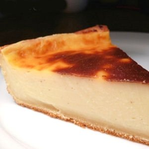

Flan pâtissier
Ingrédients
×
- 1 l de lait
- 1 gousse de vanille
- 90 g de Maïzena
- 150 g de sucre en poudre
- 4 oeufs
- 1 pâte brisée

Préparation
Étape 1
Porter à ébullition 1 l de lait avec 1 gousse de vanille fendue.
Étape 2
Mélanger 90 g de Maïzena tamisée avec 150 g de sucre en poudre et 4 oeufs battus. Ajouter le lait bouillant (sans la gousse).
Étape 3
Épaissir 1 à 2min à feu doux sans cesser de remuer.
Étape 4
Foncer un plat rectangulaire beurré avec 1 pâte brisée et y verser la préparation. Cuire 30 à 40min à 200ºC.
Résumé
1 l de lait
1 gousse de vanille
Porter à ébullition
90 g de Maïzena
150 g de sucre en poudre
4 oeufs
Mélanger
Épaissir feu doux
1 pâte brisée
Foncer Cuire 200ºC